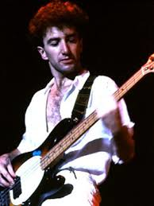
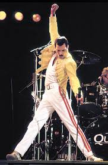
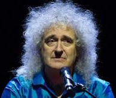

Роджер Тейлор (англ. Roger Meddows Taylor; 26 июля 1949) — британский барабанщик,
мультиинструменталист, автор песен, композитор, певец. Наиболее знаменит как
участник группы Queen и солист The Cross. Как барабанщик широко известен своим
«объёмным» уникальным звучанием и считается одним из самых влиятельных
рок-ударников 1970-х и 80-х годов.
Свои первые песни Тейлор начал писать, ещё будучи членом группы Smile (Blag).
Для ранних альбомов Queen Тейлор лично исполнял песни собственного сочинения,
но впоследствии уступил их исполнение Фредди Меркьюри. Для своих сольных альбомов
Роджер Тейлор самостоятельно исполнил как партии бас-гитары, ритм-гитары, клавишных,
так и ударных.
В прошлом сотрудничал со многими известными поп- и рок-музыкантами, такими, как:
Эрик Клэптон, Роджер Уотерс, Роджер Долтри, Роберт Плант, Фил Коллинз, Genesis,
Джимми Нейл, Элтон Джон, Гэри Ньюман, Shakin' Stevens, «Foo Fighters», Эл Стюарт,
Стив Вай, Ёсики Хаяси и Bon Jovi.
В 2005 году вошёл в TOP-10 самых великих барабанщиков в истории классического рока по версии Planet Rock.

Джон Ричард Дикон (англ. John Richard Deacon; род. 19 августа 1951,
Лестер) британский музыкант, наиболее известный как бас-гитарист группы Queen.
Дикон присоединился к Queen позже всех — в 1971 году. Также он
являлся самым младшим участником группы (на тот момент Джону было
всего 19 лет). На нескольких альбомах Дикон выступал в качестве
ритм-гитариста, играл на акустической гитаре и клавишных во время
концертов, а также в клипах, и пел бэк-вокальные партии.
Джон Дикон является автором самого коммерчески успешного сингла (
«Another One Bites the Dust»
)
за всю историю существования группы Queen. Кроме того, Дикон — автор песен:
«You're My Best Friend»
,
«Spread Your Wings»
,
«Back Chat»
,
«One Year of Love»
,
«I Want to Break Free»
и др.
В программе концерта Queen 1992 года на открытой площадке стадиона Уэмбли (известен как концерт памяти Фредди Меркьюри)было заявлено, что Джон Дикон выступает с группой в последний. Тем не менее в 1997 году музыкант принял участие в записи единственной песни группы, написанной без участия Фредди Меркьюри,
«No-One But You (Only The Good Die Young)»
, а также в организованной Элтоном Джоном концертной программе
«The Show Must Go On»
. Именно этот концерт и стал последним рубежом — Дикон сошёл с большой сцены, отказавшись от дальнейшей работы в музыкальной индустрии.
В 2004 году он отказался от совместной работы с Брайаном Мэйем и Роджером Тейлором в рамках проекта «Queen + Paul Rodgers». Тем не менее, по словам Брайана Мэя, Дикон дал проекту своё «молчаливое согласие».
Дикон не присутствовал на официальной церемонии включения участников группы Queen в Зал славы рок-н-ролла (Кливленд, США).

Фредди Меркьюри (англ. Freddie Mercury; род. 5 сентября 1946, Каменный город,
Занзибар — 24 ноября 1991, Лондон, Великобритания) — британский певец парсийского
происхождения, автор песен, вокалист рок-группы Queen. Является автором таких хитов группы, как
«Bohemian Rhapsody»
,
«Killer Queen»
,
«Seven Seas of Rhye»
,
«Somebody to Love»
,
«We Are the Champions»
,
«Don't Stop Me Now»
,
«Crazy Little Thing Called Love»
и др. Также музыкант занимался сольным творчеством.
В 2002 году Фредди Меркьюри занял 58-е место в опросе «100 величайших британцев»,
организованном компанией Би-би-си. В 2005 году журнал Blender провёл опрос, по
результатам которого Фредди занял второе место среди вокалистов (первое среди мужчин).
В 2008 году журнал Rolling Stone поставил его на 18-е место в списке «100 величайших
вокалистов всех времён по версии журнала Rolling Stone». Allmusic охарактеризовал его
как «одного из величайших рок-певцов и обладателя одного из величайших голосов за всю
историю музыки».

Брайан Гарольд Мэй (англ. Brian Harold May; род. 19 июля 1947, Лондон)
— британский рок-музыкант, гитарист группы Queen, автор многих хитов
группы. Командор Ордена Британской империи (CBE), учёный-астрофизик,
PhD. Основатель фонда в защиту животных «Save me».
Свой дебютный полноформатный альбом Брайан начал готовить в 1991 году,
незадолго до смерти Меркьюри. Выходу альбома предшествовал сингл «Driven
by You». Песня была написана к рекламной акции «Ford» и имела в Британии
очень большой успех. В поддержку «Back to the light» Брайан Мэй организовал
глобальное мировое турне. По следам этих гастролей был выпущен концертник
«Live at the Brixton Academy», на котором прозвучал как сольный материал,
так и классика Queen.